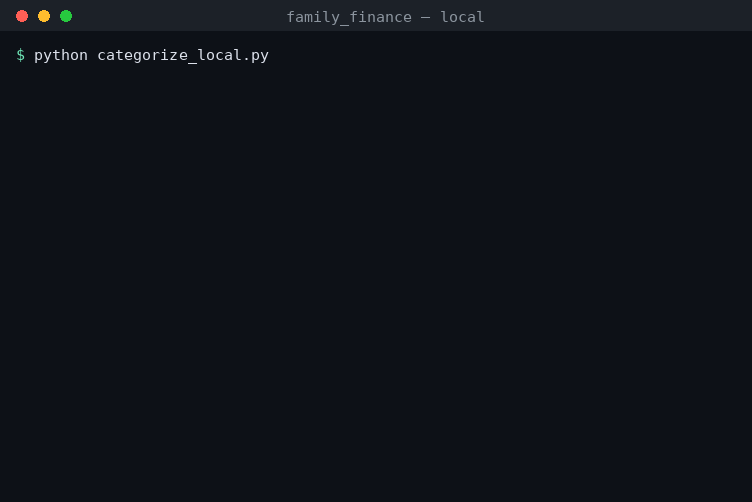

A smart AI plans the work and hands the repetitive parts to small, free AI helpers running on your own computers. Your data never leaves the house, and you stop paying by the task.

That’s the catch with today’s AI: the tasks where it would help most are often the ones involving information too private to send to a company’s servers — and doing it the “official” way means paying for every single line it reads.
A top-tier AI (like Claude). It’s smart but expensive, so it only does what truly needs brains: plan the job, handle the genuinely tricky calls, and write the final summary.
Small, free AI models running on computers you already own. They do the repetitive grunt work — sorting, labeling, tidying — fast, and at no cost. Your data stays on your machine.
The manager never touches your private files directly. It just sets up the assembly line; the helpers do the handling.
We fed in a month of (made-up) household transactions and let it sort everything.
Simple rules instantly handled the obvious ones (Safeway → Groceries, Shell → Gas). The local helper figured out the cryptic ones that rules can’t — for free, without phoning home:
15 of 24 sorted by free rules, 9 by the local helper. Account numbers were masked to the last 4 digits and phone numbers stripped — automatically. Tax-relevant items were flagged for you.
Bank statements, medical bills, client files — the work happens on your own computer. Nothing is uploaded, stored, or seen by an outside company. That alone unlocks tasks you’d otherwise never risk.
The expensive AI does almost nothing here — the free helpers do the volume. Over thousands of documents and many projects, that’s the difference between a real AI bill and your normal electric bill.
Each helper says how sure it is. A handful of its answers get spot-checked against a known-correct list, and the system honestly reports when it isn’t confident enough — flagging only the genuinely unclear items for the smart manager to settle. You get speed and a safety net.
That old Mac mini in the closet. A gaming PC with a graphics card. A spare laptop. Each one becomes another helper on the team — the same job just finishes faster. No rewiring, no new software to learn. Point it at the machines and they all pitch in.
Sorting a year of finances today. Tomorrow: triaging a folder of documents, organizing research papers, tagging thousands of photos, or summarizing a pile of meeting notes. Anything repetitive, over lots of items — done privately, on your own hardware, for next to nothing.